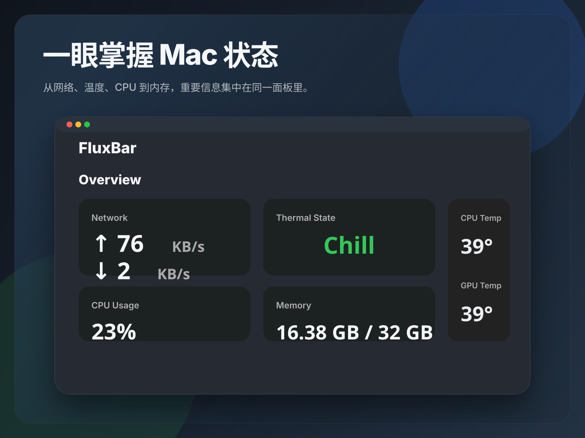
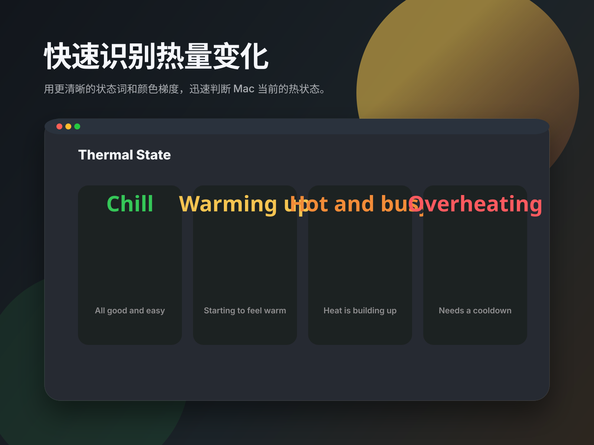
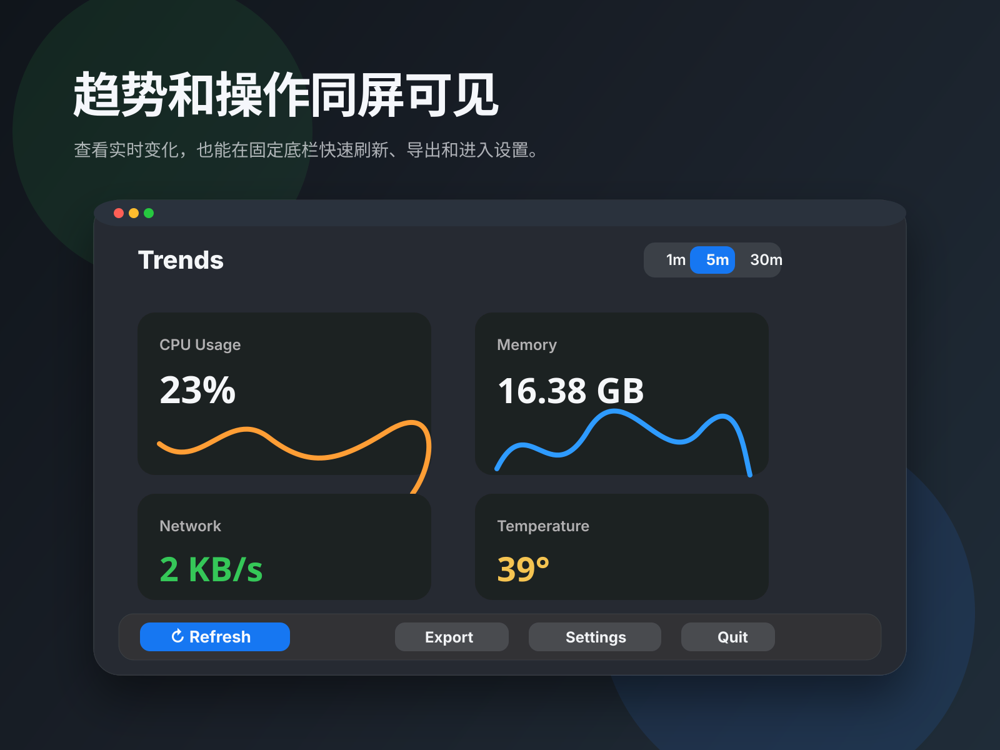

Three screenshot directions for Mac App Store listing: overview value, thermal clarity, and trends with quick controls. These are vector drafts and can be exported to the final store sizes you need.


